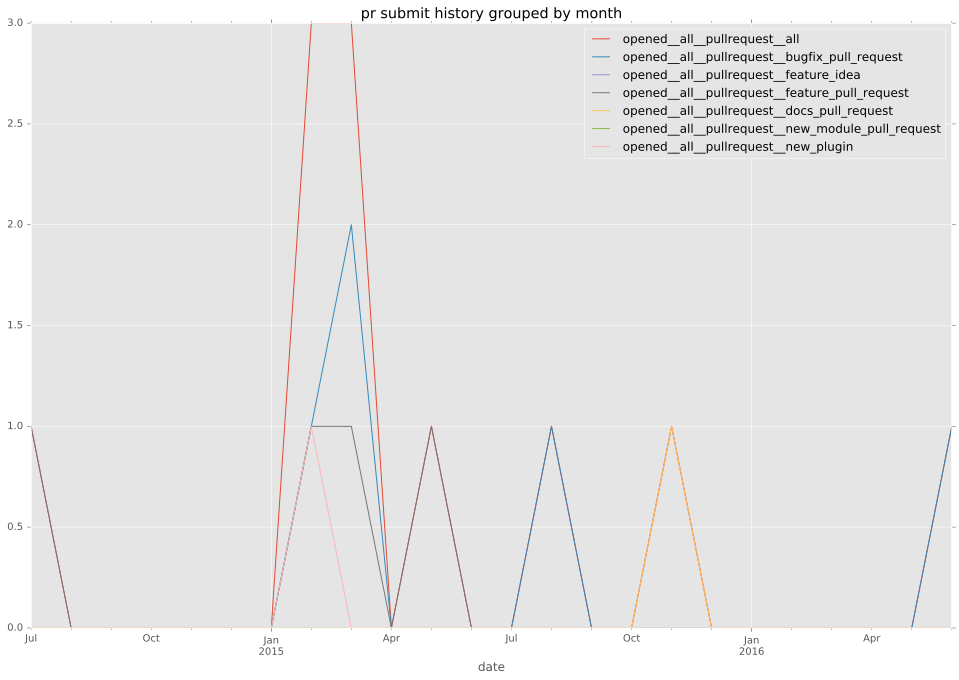
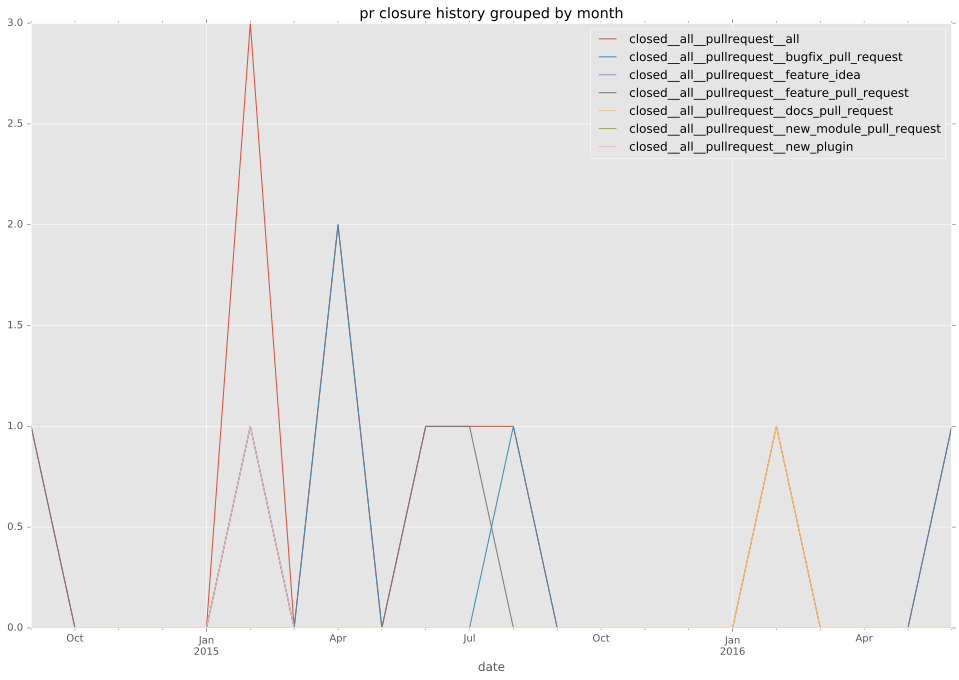

authors
- jirutka
- luisperlaz
maintainers
- jirutka
- luisperlaz
contributors
- jirutka : 19 commits
- rbu : 9 commits
- gerph : 7 commits
- thread13 : 6 commits
- bcoca : 6 commits
- mscherer : 2 commits
- sivel : 1 commits
- andre-luiz-dos-santos : 1 commits
total issue counts
unknown: 1
feature pull request: 5
pullrequest: 15
docs pull request: 1
bugfix pull request: 8
feature idea: 1
issue: 7
new plugin: 1
bug report: 5
issue history
pullrequest history


days open by issue type
bugfix pull request
count: 15
std: 4.7479318806
min: 0
max: 11
median: 2.0
mean: 3.6
all
count: 33
std: 31.1248402698
min: 0
max: 101
median: 2.0
mean: 16.5454545455
pullrequest
count: 0
std: nan
min: nan
max: nan
median: nan
mean: nan
docs pull request
count: 2
std: 0.0
min: 67
max: 67
median: 67.0
mean: 67.0
feature pull request
count: 9
std: 46.2195845935
min: 0
max: 101
median: 2.0
mean: 31.0
feature idea
count: 0
std: nan
min: nan
max: nan
median: nan
mean: nan
issue
count: 0
std: nan
min: nan
max: nan
median: nan
mean: nan
new plugin
count: 2
std: 0.0
min: 0
max: 0
median: 0.0
mean: 0.0
bug report
count: 4
std: 32.8975682992
min: 1
max: 69
median: 4.5
mean: 19.75
closures grouped by total days open